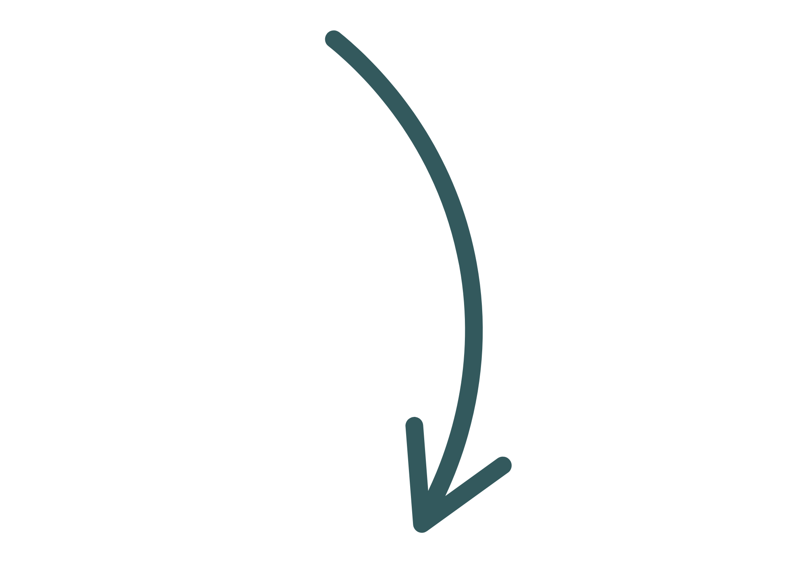

Grau 1 de Suporte
Pessoas com grau 1 de suporte apresentam dificuldades leves de comunicação e interação social. Muitas vezes conseguem autonomia, mas precisam de apoio em situações específicas.

Grau 2 de Suporte
Indivíduos neste grau necessitam de suporte substancial em praticamente todas as áreas da vida, incluindo interação social, comunicação e adaptação a rotinas.
